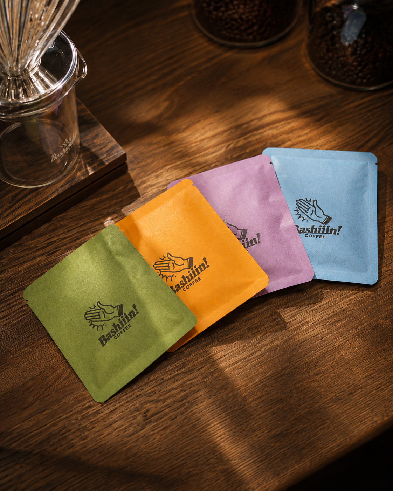
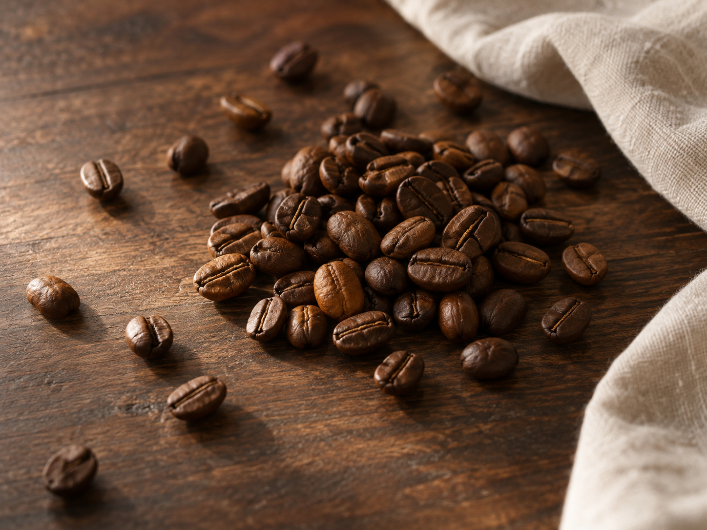
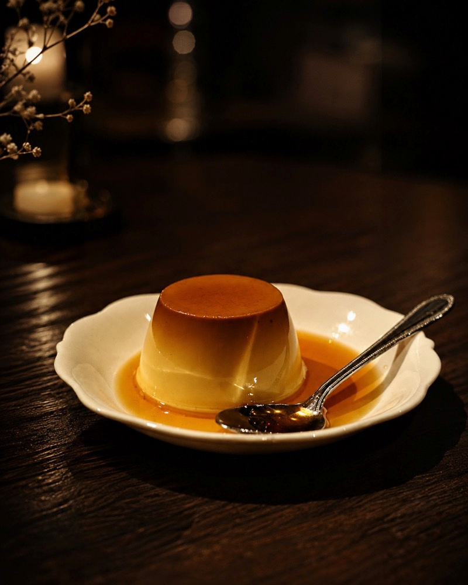
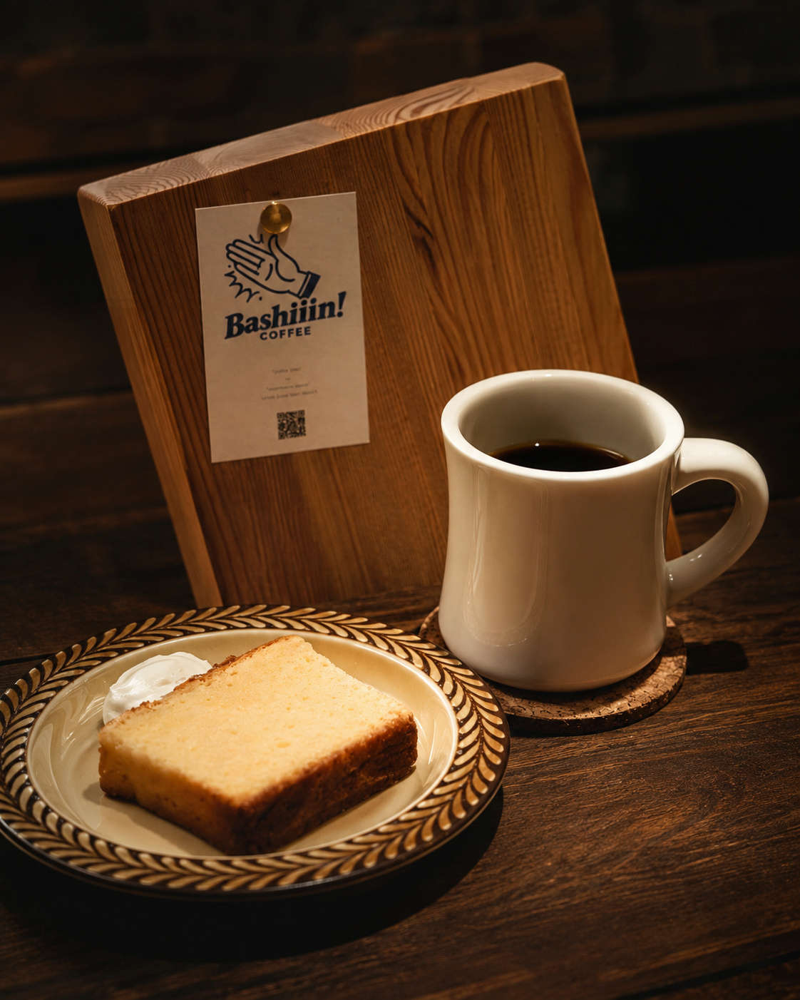
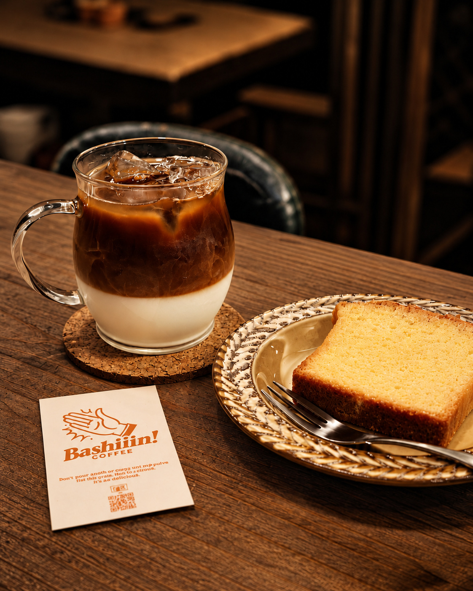
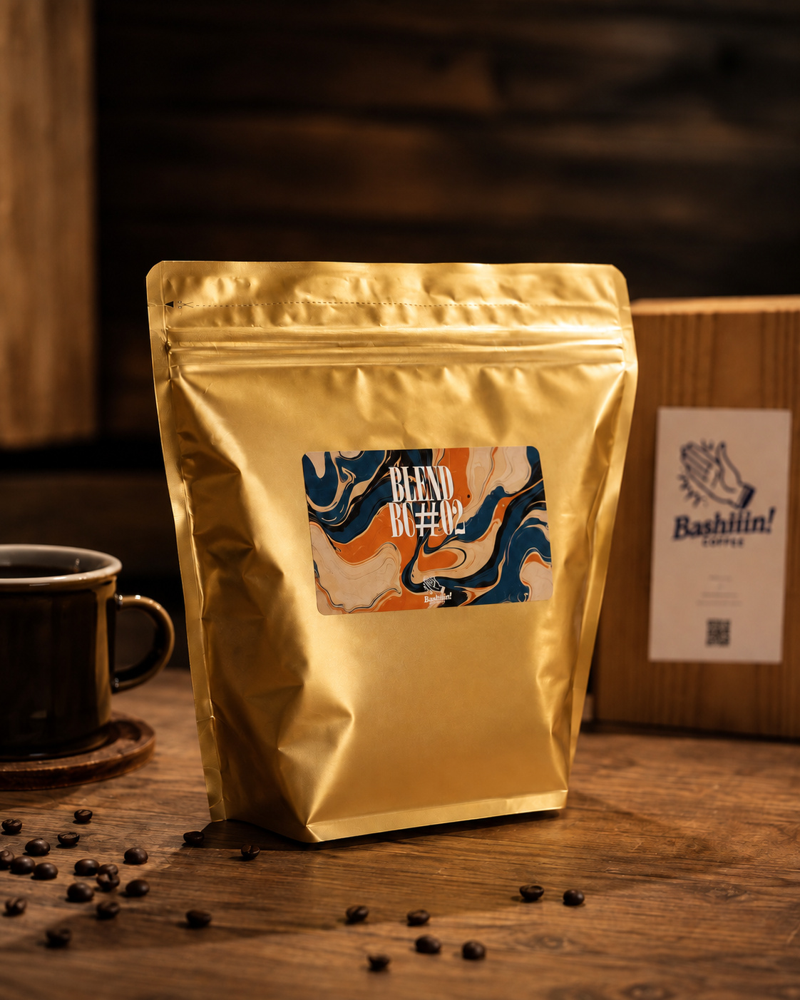
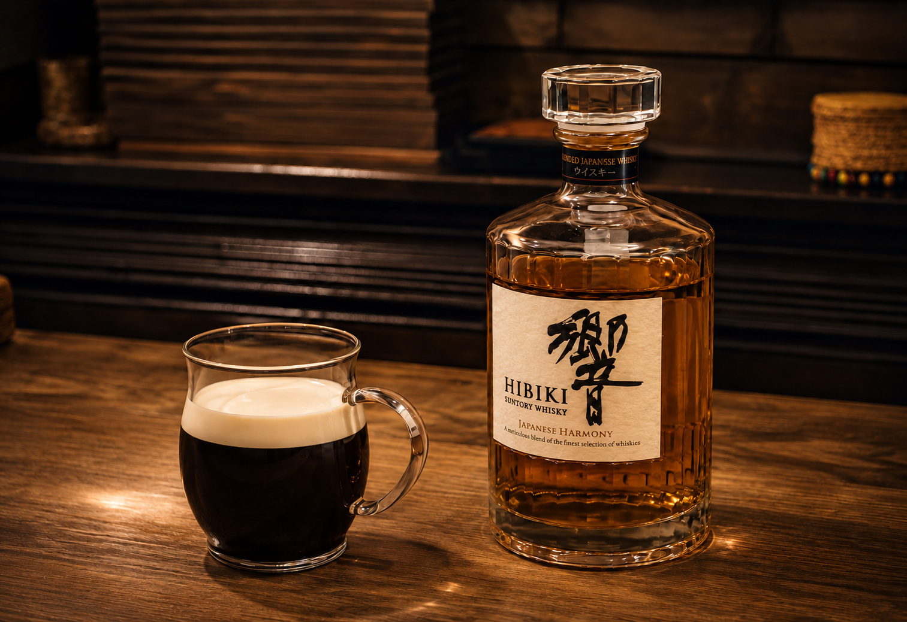
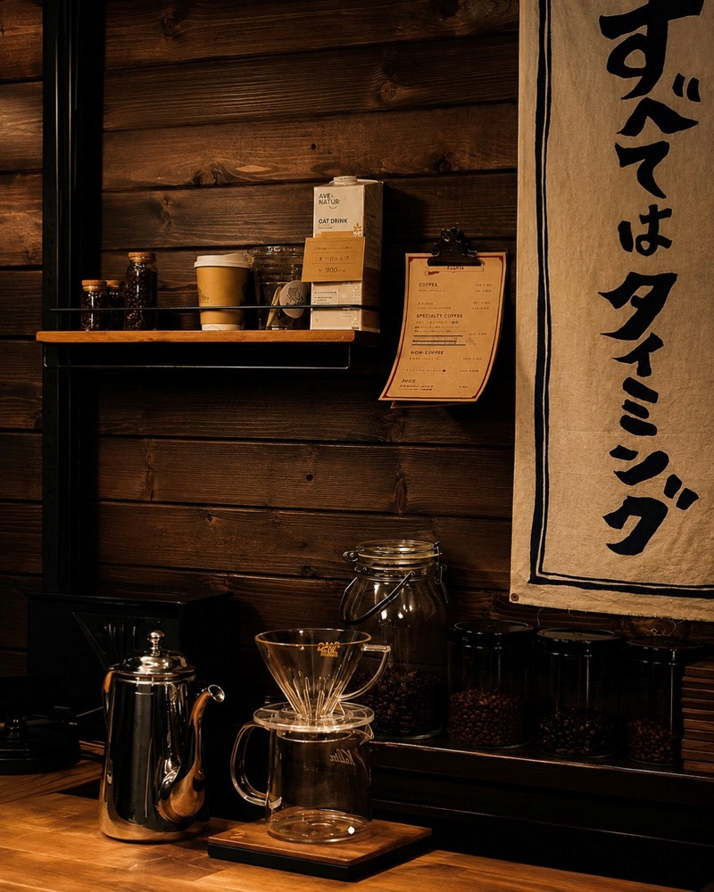
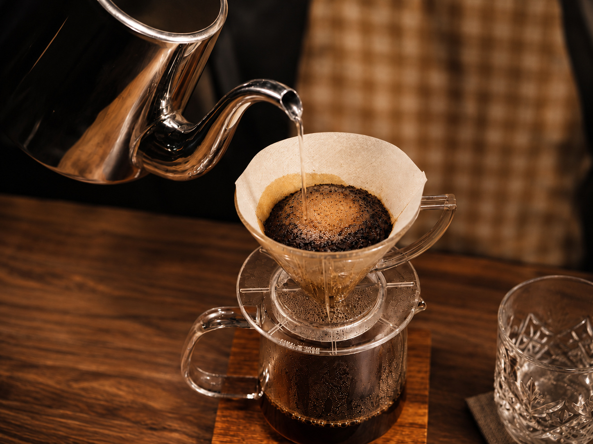

スペシャルティコーヒー
スペシャルティコーヒーを中心に、その魅力が伝わる情報をご案内します。

SPECIALTY COFFEE / KYOTO
Bashiiin! coffeeは、スペシャルティコーヒーを中心に、
スイーツや空間、カルチャーを楽しめる
コーヒースタンドです。
GOOD COFFEE, GOOD DAYS.
PLACEHOLDER PHOTO / FORMAL IMAGE PENDING
COFFEE / CRAFT
豆ごとの風味や個性を楽しむ、スペシャルティコーヒー。Bashiiin! coffeeが大切にする一杯を、写真とともにご紹介します。
スペシャルティコーヒーを中心に、その魅力が伝わる情報をご案内します。
豆ごとの風味や個性を楽しむコーヒーをご紹介します。
Bashiiin! coffeeが大切にする一杯を、写真とともにご紹介します。


商品名・産地・焙煎度・価格などは、店舗確認後に掲載します。
商品名・産地・焙煎度・価格などは、店舗確認後に掲載します。
商品名・産地・焙煎度・価格などは、店舗確認後に掲載します。
SWEETS
スイーツの内容と提供状況は、確認済みの情報に合わせてご案内します。新作は、正式な商品情報と写真の受領後に追加します。



SPACE / INTERIOR
店内の様子を、実際の雰囲気が伝わる正式写真でご紹介する予定です。
木の質感やカウンターの表情など、Bashiiin! coffeeの空間を構成する要素を、過度に演出せずお伝えします。

CULTURE
商品や企画、店の日々など、Bashiiin! coffeeのカルチャーを紹介するための場所です。具体的な掲載内容は店舗確認後に更新します。


店の日々や活動は、確認できた内容から掲載します。
コーヒーを取り巻く情報を、分かりやすく整理します。
最新の発信は公式Instagramをご覧ください。


CONTACT
Bashiiin! coffeeに関するお問い合わせは、こちらのフォームをご利用ください。
現在は確認用フォームです。送信機能は、送信先と運用環境の確定後に接続します。